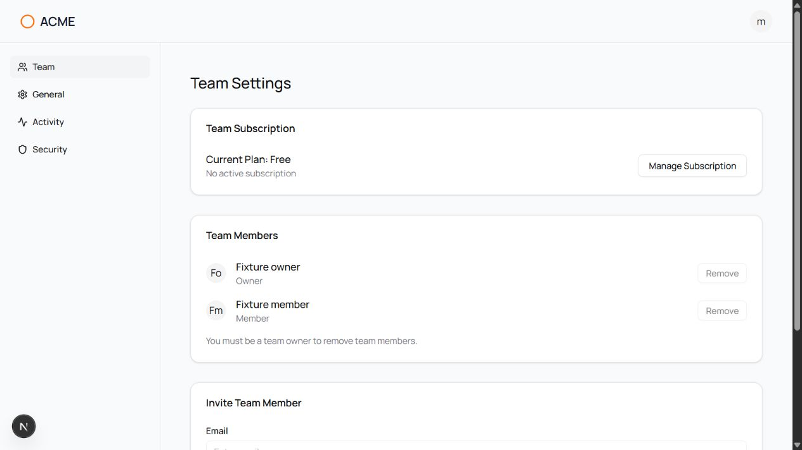
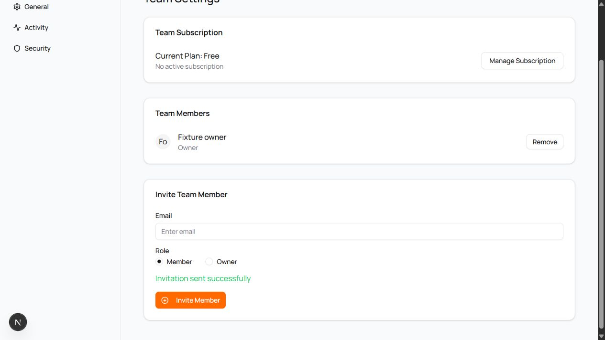
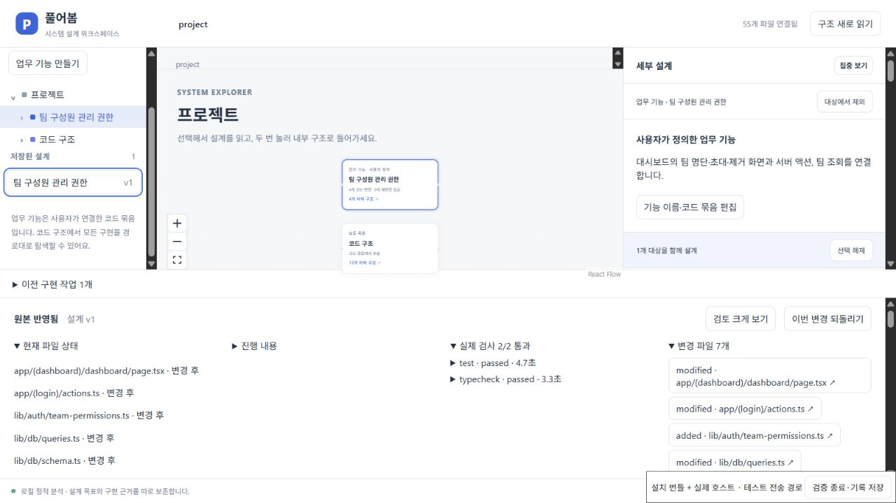
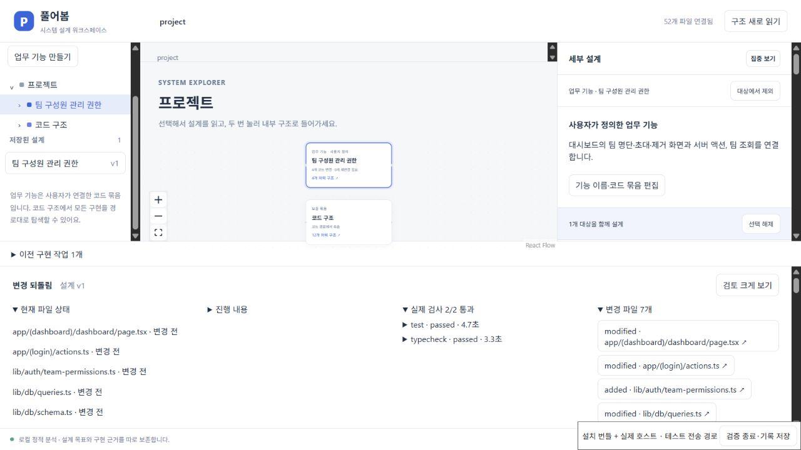

01 / 구조와 범위
팀 관리의 여러 구현을 한 기능으로 봅니다.
이 실행에서는 사용자가 팀 구성원 관리 권한이라는 업무 기능에 네 곳의 실제 코드를 연결했습니다. 기능 이름과 범위는 사용자 정의이며, 폴더 이름만으로 의미를 확정하지 않습니다.
- 대시보드명단과 초대·제거 화면
- 서버 액션요청을 검사하고 처리
- 팀 조회현재 팀과 구성원 역할
- 팀 API화면에 명단을 전달
연결한 실제 파일 보기
- app/(dashboard)/dashboard/page.tsx
- app/(login)/actions.ts
- lib/db/queries.ts
- app/api/team/route.ts
02 / 원하는 동작
기존 관측을 남기고, 구현할 목표를 저장합니다.
현재 팀의 owner만 구성원 초대와 제거를 할 수 있다. 일반 member는 팀 정보와 명단을 조회만 할 수 있다.
화면과 직접 서버 요청에 같은 팀별 권한을 적용하고, 다른 팀의 권한을 가져다 쓰지 못하도록 정책과 완료 기준을 함께 작성했습니다.
자동 초안 저장은 구현을 시작하지 않습니다. 모델 연결 전에도 구조와 코드 근거를 탐색할 수 있습니다.
03 / 구현과 검사
실제 Codex가 7개 파일을 바꿨습니다.
대시보드, 서버 액션, 팀 조회, 타입, 공통 권한 함수와 추가 검사 두 파일이 바뀌었습니다. 원래 연결한 네 파일을 출발점으로 삼고, 새 파일과 범위 밖 변경도 검토했습니다.
제품이 직접 실행한 명령의 종료 상태와 로그를 확인했습니다. 추가 검사는 후보 파일의 해시가 같은 독립 복제본에서 실행했습니다. 모델이 말한 “완료”를 검사 결과로 쓰지 않습니다.
바뀐 파일과 검토한 범위
- app/(dashboard)/dashboard/page.tsx
- app/(login)/actions.ts
- lib/db/queries.ts
- lib/db/schema.ts
- lib/auth/team-permissions.ts 추가
- tests/team-permissions.test.tsx 추가
- tests/vitest.config.mts 추가
보호한 인수 검사·설정·package.json·잠금 파일은 바뀌지 않았습니다. 범위 밖 네 파일과 추가 검사 두 파일을 따로 확인했습니다.
앱에서 확인한 member와 owner 화면
별도 PostgreSQL 시험 데이터에서 실제 로그인과 역할별 제어를 확인했습니다. 직접 서버 요청 거절은 화면이 아니라 독립 인수 검사로 확인했습니다.




04 / 반영과 복원
새 파일까지 다시 읽고, 원본으로 되돌렸습니다.
변경 내용과 기준별 검토를 저장한 뒤 시험용 원본에 반영했습니다. 새 파일 세 개를 포함해 분석 대상이 52 → 55개로 늘었고, 각 분석 해시는 실제 후보 파일과 일치했습니다.


되돌린 뒤에도 설계 목표는 남습니다
이번 변경 되돌리기를 실행하자 분석 대상은 55 → 52개, 관측은 unchanged로 돌아왔습니다. 원본 파일·Git HEAD·index·상태를 복원하고 설계 v1과 목표를 유지했습니다.


05 / 별도 실패 재현
화면만 막았으면, 서버 검사가 잡아냅니다.
성공한 후보를 별도 복사본에 옮긴 뒤 서버 권한 검사 두 곳을 의도적으로 뺐습니다. 화면과 고정 인수 검사는 그대로 뒀습니다. 이 단계는 오류를 주입한 시험 프로그램이며, AI가 새로 만든 응답이 아닙니다.
검사가 통과한 뒤 반영할 수 있습니다.
같은 인수 검사에서 7개 통과·2개 실패가 나왔습니다. 타입 검사는 통과해도 반영은 허용되지 않았습니다. 누락한 서버 검사만 복구하자 9개 모두 통과했고, 원본 앱 파일과 Git 상태는 보존됐습니다.
확인 범위
무엇을 확인했는지 함께 보여줍니다.
- 성공 사례는 실제 모델·설치 번들·실제 확장 호스트를 사용했습니다. 네이티브 VS Code Webview의 전체 포인터 전달은 별도 미검증입니다.
- 인증·계정·결제 코드 회귀에는 시험용 요청 context와 Stripe 응답이 포함됩니다. 운영 인증·실제 결제 전체 및 설치 전체 감사는 미확인으로 남겼습니다.
- 미확인 유지 조건 두 개를 기록하고 이를 인지하는 선택을 한 시험용 원본에 반영했습니다. 실제 고객의 승인이나 사용성·속도 개선을 입증하지 않습니다.
- 첫 지원 범위는 데스크톱 VS Code·로컬 Git·TypeScript/React·검증한 Next 구성입니다. 기본 탐색은 로컬이며, Codex 구현을 선택하면 설계와 코드가 모델에 전달됩니다.